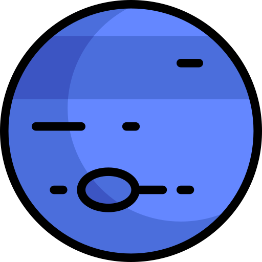
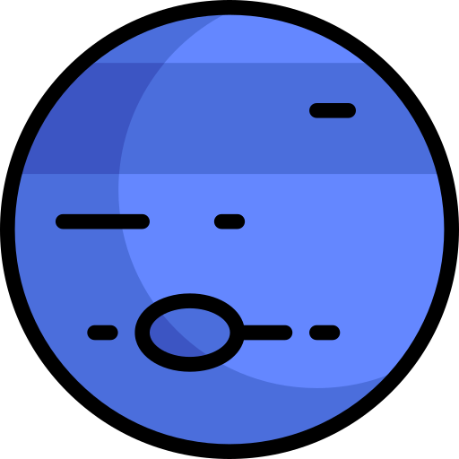

.png) Neptune 
Neptune 
Neptune is the eighth planet from the Sun, making it the most distant in the solar system. This gas giant may have formed much closer to the Sun in the early solar system history before migrating out to its current position.
| Attribute | Value |
|---|---|
| Equatorial Diameter | 49,528 km |
| Polar Diameter | 48,682 km |
| Mass | 1.02 × 10^26 kg (17 Earths) |
| Moons | 14 (Triton) |
| Rings | 5 |
| Orbit Distance | 4,498,396,441 km (30.10 AU) |
| Orbit Period | 60,190 days (164.8 years) |
| Surface Temperature | -201 °C |
| Discovery Date | September 23rd, 1846 |
| Discovered By | Urbain Le Verrier & Johann Galle |
Discovery of Neptune
Neptune was not known to the ancients. It is not visible to the naked eye and was first observed in 1846. Its position was determined using mathematical predictions. It was named after the Roman god of the sea.
Rotation and Size
Neptune spins on its axis very rapidly. Its equatorial clouds take 16 hours to make one rotation. This is because Neptune is not a solid body. Neptune is the smallest of the ice giants. Despite being smaller than Uranus, Neptune has a greater mass. Below its heavy atmosphere, Uranus is made of layers of hydrogen, helium, and methane gases. They enclose a layer of water, ammonia, and methane ice. The inner core of the planet is made of rock.
Atmosphere and Climate
The atmosphere of Neptune is made of hydrogen and helium, with some methane. The methane absorbs red light, which makes the planet appear a lovely blue. High, thin clouds drift in the upper atmosphere. Neptune has a very active climate. Large storms whirl through its upper atmosphere, and high-speed winds track around the planet at up to 600 meters per second. One of the largest storms ever seen was recorded in 1989. It was called the Great Dark Spot, and it lasted about five years.
Rings and Moons
Neptune has a very thin collection of rings. They are likely made up of ice particles mixed with dust grains and possibly coated with a carbon-based substance. Neptune has 14 moons. The most interesting moon is Triton, a frozen world that is spewing nitrogen ice and dust particles out from below its surface. It was likely captured by the gravitational pull of Neptune. It is probably the coldest world in the solar system.
Spacecraft Exploration
Only one spacecraft has flown by Neptune. In 1989, the Voyager 2 spacecraft swept past the planet. It returned the first close-up images of the Neptune system. The NASA/ESA Hubble Space Telescope has also studied this planet, as have a number of ground-based telescopes.